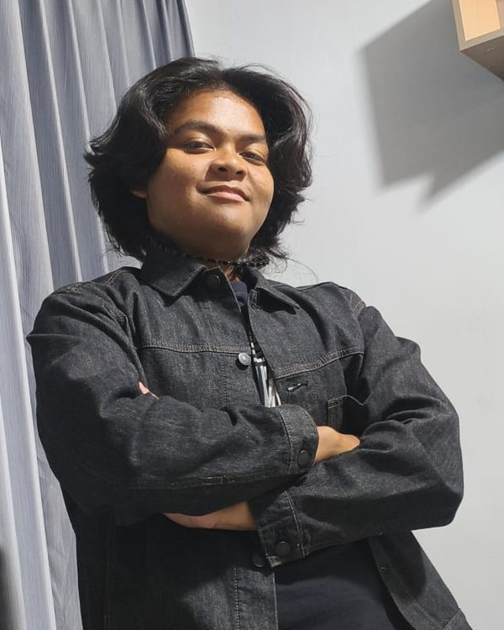
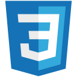
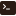
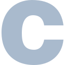
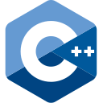
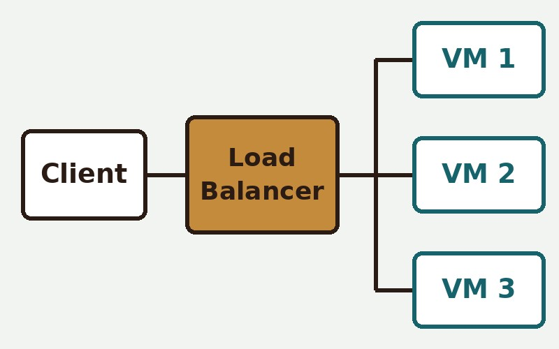
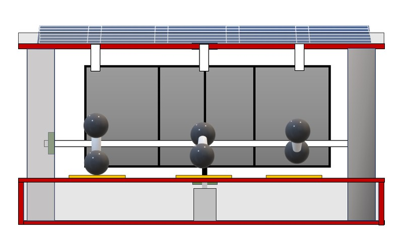
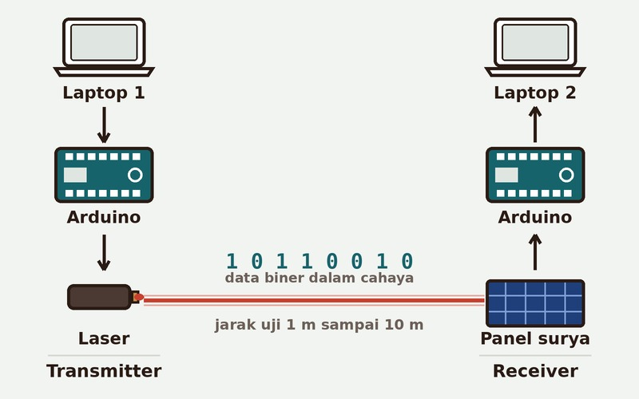

Hi, I'm Muhammad Adinata Parikesit
Informatics Engineering student at ITS, class of 2025. Active in several technical teams on campus, and currently learning to build applications that run in the cloud.
About Me
Right now, I’m studying Informatics Engineering at Institut Teknologi Sepuluh Nopember (ITS). I’m learning by building small projects, asking better questions, and paying attention to how real people use the things I make.
When I’m away from the screen, coffee, music, and long conversations help me slow down and return to the work with a clearer point of view.
Experience and Organization
-
Present
Calculus 1 Teaching Assistant
Institut Teknologi Sepuluh Nopember (ITS) | Surabaya, East Java
Supporting students and lecturers in the Calculus 1 course.
-
April 2026 – Present
Operational Staff
Schematics | Tuban, East Java
- Managing and optimizing daily logistics and technical operations to ensure all Zenitron activities and projects run efficiently.
- Coordinating cross-functional resource allocation and inventory management, maintaining high operational standards across all events.
- Organizing strategic workflows and execution plans for major programs as a means of ensuring seamless implementation and minimizing technical bottlenecks.
-
February 2026 – Present
PSDM Staff
Zenitron 11 | Tuban, East Java
- Improving the quality and internal potential of ZENITRON members through continuous skill and knowledge development.
- Creating a supportive environment that facilitates maximum personal growth and competency development for students.
- Organizing strategic programs such as Staff Upgrading and ZEMPO as a means of increasing human resource capacity.
-
October 2025 – January 2026
IT Division Coordinator
Ini Lho ITS x Zenitron 2026 | Tuban, East Java
- Coordinated the IT division to support technical execution for an academic tryout event involving 310 participants.
- Ensured readiness and functionality of all computers and technical equipment to minimize system disruptions.
- Served as IT Person in Charge (PIC) during the TOSN event, providing on-site technical troubleshooting.
Skills
- Microsoft Azure
- Docker
- Docker Compose
- Nginx
 HTML
HTML
CSS- JavaScript
- Linux (WSL2/Ubuntu)

SSH Git
Git GitHub
GitHub
C
C++- PostgreSQL
Projects
-

2026
Portfolio Behind an Azure Load Balancer
This very website. Packaged with Docker, run on multiple VMs, with traffic distributed by an Azure Standard Load Balancer.
Azure, Docker, Nginx, HTML/CSS/JS
-

2024
Riven (Trivergent Energy)
An eco-friendly power generator that combines solar panels, wind turbines, and piezoelectric elements driven by rainwater to power a tsunami early warning system. Built for the IYSA international scientific research competition, with test results of 22.3 V on a sunny day and 7.3 V on a rainy night.
Solar panels, wind turbine, piezoelectric, Arduino Uno
-

2024
SERBA DASTER: Laser-Based Li-Fi
A prototype that sends text using laser light. An Arduino converts the data into a binary signal, a laser transmits it, and a solar panel on the receiving side captures it and translates it back. Tested at distances of 1, 3, 5, and 10 meters; at 1 meter, all three transmissions arrived intact.
Arduino Uno, laser, solar panel, Li-Fi
Contact
Feel free to reach out through any of these channels.